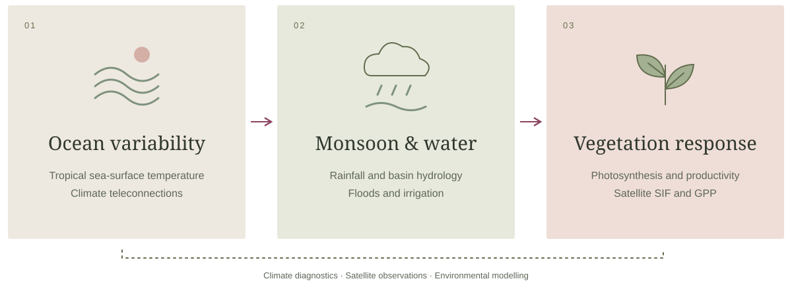

Disentangling hydroclimatic and irrigation controls on vegetation photosynthesis variability in India
Ecohydrology & Hydrobiology
Read publicationDr. Roma Varghese
Earth system science at the intersection of ocean–climate variability, hydrology and vegetation dynamics.

An interconnected Earth
Research examines how tropical ocean variability connects with monsoon rainfall, river-basin hydrology and vegetation photosynthesis across India and monsoon Asia.

Research focus
Tropical ocean variability, monsoon teleconnections and terrestrial vegetation productivity.
Hydroclimatic pathways, flood generation and decadal prediction of Indian river basins.
Satellite vegetation measurements, field observations and AI applications in ecohydrology.
Selected publications
Ecohydrology & Hydrobiology
Read publicationHydrological Processes, 40(7)
Read publicationGlobal Change Biology, 31(12)
Read publicationResearch recognition
Recognition at the International Symposium on Tropical Meteorology, IITM Pune.
Profile & achievements